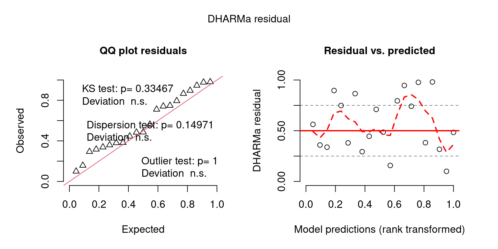
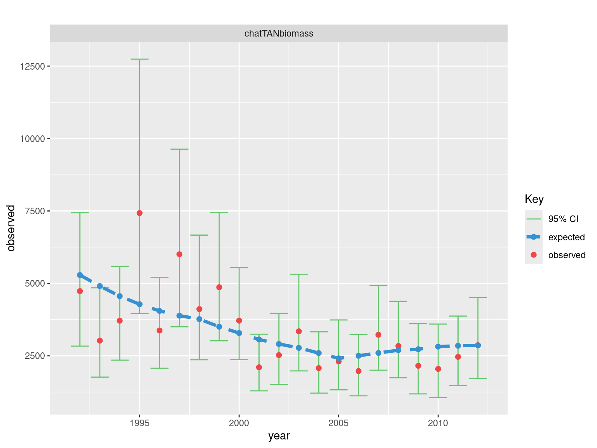
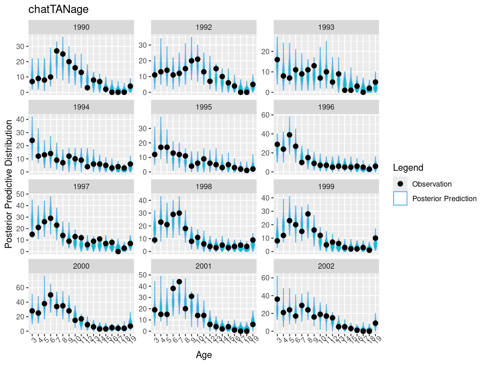
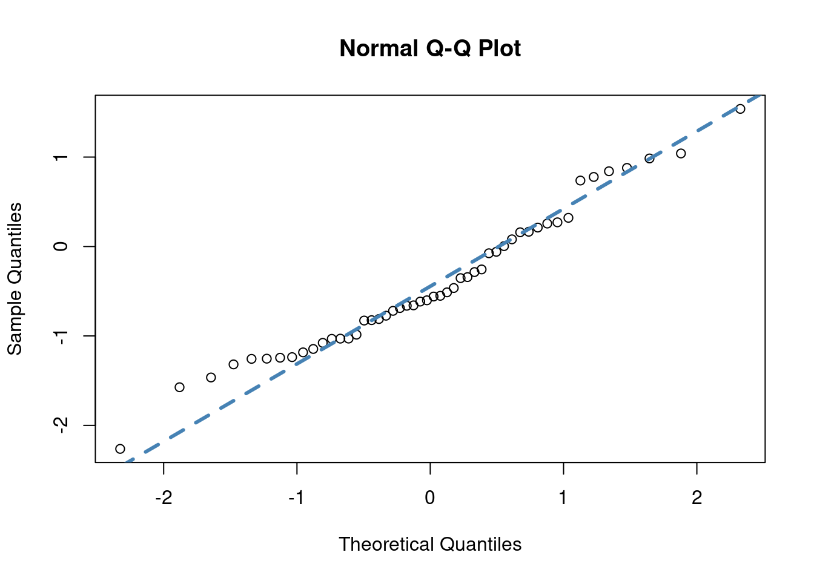

Chapter 6 Posterior Predictive Checks
6.1 Introduction
This vignette demonstrates how to use Casal2s simulation mode with r4Casal2 R functions to generate posterior predictive checks for goodness of fit measures. In terms of assessment workflow, this falls in the Diagnostic component.
The following vignette uses the Casal2 model embedded into this R package. If you want to see where this is on you system paste the following line of code into your R console system.file("extdata", "PosteriorPredictiveChecks", package = "r4Casal2")

Assessment Process
6.2 Estimation
Before looking at data goodness of fit you should be checking if the model has converged. We assume that the estimated model has satisfied this criteria i.e. invertable covariance, acceptable gradient (close to zero) and global minima (apposed to local try jittering start values).
library(DHARMa)## This is DHARMa 0.4.5. For overview type '?DHARMa'. For recent changes, type news(package = 'DHARMa')library(mvtnorm) ## if simulating obs at MPD
mpd_file_name = system.file("extdata", "PosteriorPredictiveChecks","estimate.log",
package = "r4Casal2", mustWork = TRUE)
mpd = extract.mpd(file = mpd_file_name)## WARNING: The output file was generated with a different version than the R libray being used to read the output.
## This may cause compatibility issues. Please update the R package to be consistent with the version of Casal2 used to generate the output.
## The output was generated with Casal2 v(c) 2
## The Casal2 R package is compatible with Casal2 v22.05# Report labels
names(mpd)## [1] "header" "obj" "estimate_summary"
## [4] "covar" "hess" "estimate_value"
## [7] "biomass_t1" "chatOBSest" "chatOBSwst"
## [10] "chatTANage" "chatTANbiomass" "Recruitment"
## [13] "Ageing" "instant_mort" "MaturationSel"
## [16] "westFSel" "eastFSel" "chatTANSel"
## [19] "One" "messages_encountered"# is covariance symetric
isSymmetric(mpd$covar$covariance_matrix)## [1] TRUE# is hessian invertable
is_matrix_invertable(mpd$hess$hessian_matrix)## [1] TRUE6.3 Simulations
The first thing you should do is add reports of type simulated_observation for each observation in your Casal2 configuration files. The helper function ?create_simulation_reports will automatically generate a casal2 compatible reports to a file named simulated_reports.csl2 containing all simulated observations in your configuration files. If you use this function you will need to then add an include statement into your Casal2 config files i.e. !include simulated_reports.csl2 before running casal2 in simulation mode casal2 -s 1.
config_dir = system.file("extdata", "PosteriorPredictiveChecks", package = "r4Casal2", mustWork = TRUE)
config_files = "Observation.csl2"
## this will create the file 'simulated_reports.csl2' in config_dir
## in addition to creating the directory labelled output_folder
obs = create_simulation_reports(config_dir = config_dir, config_files = config_files,
output_folder = "simulated_observations")
## append include statement
if(FALSE)
cat("!include simulated_reports.csl2", file =
file.path(config_dir, "config.csl2"), append = T)
## run Casal2 -s
# system(paste0("cd ", config_dir, "; casal2 -s 100 -i pars" ))If you don’t have these reports in your configuration files, Casal2 will not save simulated observations. Tips when specifying this report class
- Save each simulated observation into a seperate
file_name - Create a directory to save simulated data sets in.
- Have the report label the same as the
file_name(see example below) - Avoid haveing periods/dots (“.”) in
file_name
An example report structure would look like
@report sim_chatTANage
type simulated_observation
observation chatTANage
file_name simulated_observations/sim_chatTANageThere are three variants of simulations you can conduct in Casal2, and these depend on if you are in MPD or MCMC estimation phase. If you are evaluating a MPD run, there are two variants and depend if you want to account for parameter uncertainty or not. If you don’t want parameter uncertainty, then you need to run the following Casal2 command to produce 100 sets of simulations casal2 -s 100 -i mpd_pars.log > simulate.log. If you want to account for parameter uncertainty then you can use a multivariant normal distribution with mean equal to MPD and resulting covariance to produce a set of simulations, example below.
n_sims = 1000
## NOTE: might have issue with bounds assuming normal dist
sims = rmvnorm(n = n_sims, mean = as.numeric(mpd$estimate_value$values),
sigma = mpd$covar$covariance_matrix)
dim(sims)## [1] 1000 46colnames(sims) = names(mpd$estimate_value$values)
## save simulated pars in the same directory as your
## CSL files
if(FALSE)
write.table(sims, file = "mpd_mvnorm_pars.csl2", quote = F, row.names = F, col.names = T)
# run
# casal2 -s 1 -i mpd_mvnorm_pars.csl2 > simulate.log6.4 Summarising simulated data in R
Assuming you have saved all the simulated observations as separate files in a standalone folder.
sim_dir = system.file("extdata", "PosteriorPredictiveChecks","simulated_observations",
package = "r4Casal2", mustWork = TRUE)
## created from running simulations and reading them in with
# sim_vals = read.simulated.data(dir = sim_dir, mean_age = F)
# saveRDS(sim_vals, file.path("sim_vals.RDS"))
sim_vals = readRDS(file.path(sim_dir, "sim_vals.RDS"))
# check no trouble with files
sim_vals$failed_files## logical(0)#
names(sim_vals$sim_obs)## [1] "sim_chatOBSest" "sim_chatOBSwst" "sim_chatTANage"
## [4] "sim_chatTANbiomass"sim_dir_alt = system.file("extdata", "PosteriorPredictiveChecks","simulated_observations_no_param_var",
package = "r4Casal2", mustWork = TRUE)
#sim_vals_alt = read.simulated.data(dir = sim_dir_alt, mean_age = F)
#saveRDS(sim_vals_alt, file.path("sim_vals_alt.RDS"))
sim_vals_alt = readRDS(file.path(sim_dir_alt, "sim_vals_alt.RDS"))
# check no trouble with reading in files
sim_vals_alt$failed_files## logical(0)#
names(sim_vals_alt$sim_obs)## [1] "sim_chatOBSest" "sim_chatOBSwst" "sim_chatTANage"
## [4] "sim_chatTANbiomass"6.5 Posterior predictive checks
Once simulated data has been read into the R environment, we want to compare where the observed values fall relative to the posterior predictive distributions. We recommend using the DHarma r package for this. To intepret P-values or understand the test-statistics that DHARMa does copy this into your R console vignette("DHARMa", package="DHARMa") (Assuming you have installed this package).
## Create DHARMa objects and P-values
DHARMaResbio = createDHARMa(simulatedResponse = sim_vals$sim_obs$sim_chatTANbiomass,
observedResponse = mpd$chatTANbiomass$Values$observed,
fittedPredictedResponse = mpd$chatTANbiomass$Values$expected, integerResponse = F)
## Create DHARMa objects and P-values
## for AF
mpd$chatTANage$Values$numbers_at_age = mpd$chatTANage$Values$observed * mpd$chatTANage$Values$error_value
year = 1999
obs = mpd$chatTANage$Values$numbers_at_age[mpd$chatTANage$Values$year == year]
DHARMaResAF = createDHARMa(simulatedResponse = sim_vals$sim_obs$sim_chatTANage[[as.character(year)]], observedResponse = obs,
fittedPredictedResponse = NULL, integerResponse = F)## No fitted predicted response provided, using the mean of the simulations## use DHARMa functions
plot(DHARMaResbio, quantreg = F)
plot(DHARMaResAF, quantreg = F)Examples of custom plots
sim_chatTANbiomass = sim_vals$sim_obs$sim_chatTANbiomass
rownames(sim_chatTANbiomass) = mpd$chatTANbiomass$Values$year
DHARMaResbio_quant_resids = createDHARMa(simulatedResponse = sim_chatTANbiomass,
observedResponse = mpd$chatTANbiomass$Values$observed,
fittedPredictedResponse = mpd$chatTANbiomass$Values$expected, integerResponse = F)
## convert from uniform variable -> standard normal
norm_quant_resids = qnorm(DHARMaResbio_quant_resids$scaledResiduals)
# formal tests
#dispersion_test = testDispersion(DHARMaResbio_quant_resids)
#zero_inflat_test = testZeroInflation(DHARMaResbio_quant_resids)
temporal_correlation = testTemporalAutocorrelation(simulationOutput = DHARMaResbio_quant_resids, time = mpd$chatTANbiomass$Values$year, plot = F) ## HO: rho = 0, HA: rho != 0
temporal_correlation##
## Durbin-Watson test
##
## data: simulationOutput$scaledResiduals ~ 1
## DW = 1.9861, p-value = 0.9743
## alternative hypothesis: true autocorrelation is not 0## plot posterior predictive checks
bioplt = plot_abundance_predictive_dist(sim_data = sim_chatTANbiomass,
obs = data.frame(obs = mpd$chatTANbiomass$Values$observed,
year = mpd$chatTANbiomass$Values$year,
mpd_fit = mpd$chatTANbiomass$Values$expected),
lab = "", plot_type = "violin")## Warning in regularize.values(x, y, ties, missing(ties), na.rm = na.rm):
## collapsing to unique 'x' valuesbioplt= bioplt + theme(axis.text.x = element_text(angle = 90)) +
ggtitle("MPD Predictive distributions")
## qq plot for simulated quantile residuals.
norm_resid = ggplot(data.frame(resids = norm_quant_resids), aes(sample = resids)) +
stat_qq(size = 3) +
stat_qq_line(col = "steelblue", size = 1.5, linetype = "dashed") +
labs(x = "Theoretical", y = "Sample")
## Plot normalised residuals generated from Casal2
normalised_resids = ggplot(mpd$chatTANbiomass$Values, aes(sample = normalised_residuals)) +
stat_qq(size = 3) +
stat_qq_line(col = "steelblue", size = 1.5, linetype = "dashed") +
labs(x = "Theoretical", y = "Sample")
## Plot fits obs
fits = plot.relative_index(model = mpd, report_label = "chatTANbiomass") + ggtitle("")
##
fits
Look at Predictive checks when generated with variability in parameter estimates as well.
## Create DHARMa objects and P-values
DHARMaResbio = createDHARMa(simulatedResponse = sim_vals_alt$sim_obs$sim_chatTANbiomass,
observedResponse = mpd$chatTANbiomass$Values$observed,
fittedPredictedResponse = mpd$chatTANbiomass$Values$expected, integerResponse = F)
## Create DHARMa objects and P-values
## for AF
year = 2000
obs = mpd$chatTANage$Values$numbers_at_age[mpd$chatTANage$Values$year == year]
DHARMaResAF = createDHARMa(simulatedResponse = sim_vals_alt$sim_obs$sim_chatTANage[[as.character(year)]], observedResponse = obs,
fittedPredictedResponse = NULL, integerResponse = T)## No fitted predicted response provided, using the mean of the simulationsplot(DHARMaResbio, quantreg = F)plot(DHARMaResAF, quantreg = F)Some other visualizations plots
########################
## boxplot predictive distribution vs observation
legend = c("Posterior Prediction" = "#56B4E9", "Observation" = "black" , "MPD" = "#D55E00")
sim_data = sim_vals$sim_obs$sim_chatTANbiomass
rownames(sim_data) = mpd$chatTANbiomass$Values$year
bioplt = plot_abundance_predictive_dist(sim_data = sim_data,
obs = data.frame(obs = mpd$chatTANbiomass$Values$observed,
year = mpd$chatTANbiomass$Values$year,
mpd_fit = mpd$chatTANbiomass$Values$expected),
lab = "chatTANbiomass", plot_type = "violin")## Warning in regularize.values(x, y, ties, missing(ties), na.rm = na.rm):
## collapsing to unique 'x' valueschat_sim_vals = get_simulated_age_resids(sim_vals$sim_obs$sim_chatTANage, mpd$chatTANage)
obs_years = unique(chat_sim_vals$mpd_df$year)
years_to_plot = obs_years[1:12]
pppAFplt_1 = ggplot(chat_sim_vals$full_simulated_values %>%
filter(year %in% years_to_plot), aes(x = factor(age, ordered = T), y = simulated_value)) +
geom_violin(aes(color = "Posterior Prediction", fill = "Posterior Prediction"),adjust=2) +
scale_color_manual(values = legend) +
guides(fill = "none") +
theme(axis.text.x = element_text(angle = 45)) +
labs(colour = "Legend", x = "Age", y = "Posterior Predictive Distribution") +
geom_point(data = chat_sim_vals$mpd_df %>% filter(year %in% years_to_plot), aes(x = factor(age, ordered = T), y = observed * error_value, color = "Observation", fill = "Observation"), size = 2.4, inherit.aes = F ) +
facet_wrap(~year, scales = "free_y", ncol = 3) +
ggtitle("chatTANage")
pppAFplt_1
OM_file = system.file("extdata", "PosteriorPredictiveChecks","OM","OM_vary.log", package = "r4Casal2", mustWork = TRUE)
OM_run = extract.mpd(file = OM_file)## WARNING: The output file was generated with a different version than the R libray being used to read the output.
## This may cause compatibility issues. Please update the R package to be consistent with the version of Casal2 used to generate the output.
## The output was generated with Casal2 v(c) 2
## The Casal2 R package is compatible with Casal2 v22.05
##
## loading a Casal2 output from a multi parameter input format
## loading a Casal2 output from a multi parameter input format## plot SSBs
my_plot = r4Casal2::plot.derived_quantities(model = list(OM = OM_run, EM = mpd), report_label = "biomass_t1")## [1] "multi iteration report found"my_plot = my_plot + xlab("SSB") + ylim(0, 120000)6.6 PIT residuals
Pearson residuals for multinomial distributed random variables can be difficult to intepret for a lot of reasons, data-weighting for mean age to standardised residuals = 1 (Francis 2011), sparsity can create funny patterns etc. An alternative is to use randomised quantile PIT residuals (Warton, Thibaut, and Wang 2017; Dunn and Smyth 1996)
Assuming we have data denoted by \(y\) which has cumulative distribution function \(F(y; \theta), u = F(y; \theta) \sim Uniform(0,1)\). For discrete variables the following adjustment can be made \[\begin{align} u_i = q_i F(y; \theta) + (1 - q_i) F(y^{-}; \theta) \end{align}\] where, \(q_i\) is a standard uniform random variable and \(y^{-}\) is the previous allowable value for \(y\). they do not behave like residuals in the usual sense they are centred around a value of 0.5 rather than a value of 0, and are bounded between 0 and 1.
# hello
set.seed(123)
n = 50
nsims = 1000
x = rnorm(n, 5, 3)
beta0 = 3
beta1 = 1.2
true_beta1 = 1
y = rpois(n, beta0 + true_beta1 * x)
y_sim = matrix(nrow = n, ncol = nsims)
for(i in 1:nsims)
y_sim[,i] = rpois(n, beta0 + beta1 * x)
## calculate PIT
PITResiduals = rep(NA, n)
altPITResiduals = rep(NA, n)
for (i in 1:n){
minSim <- mean(y_sim[i,] < y[i])
maxSim <- mean(y_sim[i,] <= y[i])
if (minSim == maxSim) {
PITResiduals[i] = minSim
} else {
PITResiduals[i] = runif(1, minSim, maxSim)
}
qi = runif(1)
lower_limit = mean(y_sim[i,] < y[i])
cum_ecdf = mean(y_sim[i,] <= y[i])
altPITResiduals[i] = qi * cum_ecdf + (1 - qi) * lower_limit
}
plot(PITResiduals, altPITResiduals)
# It is assumed that PIT resiudals are from uniform(0,1)
# most people transform them to normal distribution for testing
# for familiarity more than anything.
normal_transformed = qnorm(PITResiduals)
qqnorm(normal_transformed)
qqline(normal_transformed, col = "steelblue", lwd = 3, lty = 2)
shapiro.test(normal_transformed)##
## Shapiro-Wilk normality test
##
## data: normal_transformed
## W = 0.97169, p-value = 0.2707# From the output, the p-value > 0.05 implying that the distribution
# of the data are not significantly different from normal distribution.
# In other words, we can assume the normality.